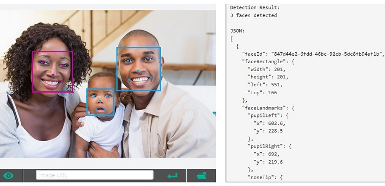

Распознавание лиц

Распознавание лиц — практическое приложение теории распознавания образов, в задачу которого входит автоматическая
локализация лица на фотографии и, в случае необходимости, идентификация персоны по лицу. Функцию идентификации
людей на фотографиях уже активно используют в программном обеспечении для управления фотоальбомами (Picasa,
iPhoto и др.).
Основные характеристики:
-
Возможность поиска и распознавания нескольких лиц
-
Устойчивость к изменениям в прическе, наличию/отсутствию усов и бороды, очкам (кроме солнцезащитных), возрастным изменениям
(кроме детей), поворотам (до 30 градусов)
-
Возможность привязки к изображениям ключевых слов (например, «политик», «бизнесмен» и т.д.) и краткого описания для дальнейшей
автоматической классификации обрабатываемого контента
-
Вывод результатов распознавания в виде простого текста, либо XML-документа, включающего информацию о положении и размере
найденных лиц, результатах распознавания и временных метках
-
Слабая зависимость скорости работы от размера используемой галереи лиц. Например, при увеличении галереи со 100 до 1000 лиц,
скорость работы уменьшается менее чем на 10%